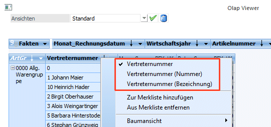
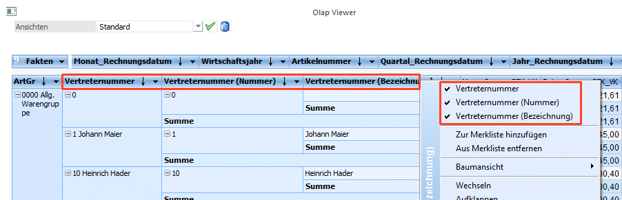
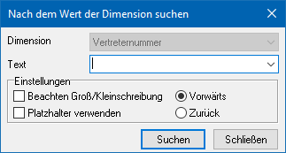

Folgende Funktionen stehen bei Dimensionen über die rechte Maustaste zur Verfügung:
Ø Splittung
Handelt es sich bei der Dimension um einen Datensatz der sich aus einer Nummer und Bezeichnung zusammensetzt, wie z.B. die Artikelnummer, Konto, Vertreter, Arbeitnehmer etc. so kann mittels rechter Maustaste diese Dimension gesplittet werden.
Beispiel


Ø Zu Merkliste hinzufügen
Mittels Merkliste hinzufügen können die angezeigten Datensätze der Dimension in eine Merkliste übergeben werden.
Ø Von Merkliste entfernen
Mittels von Merkliste Entfernen können die angezeigten Datensätze der Dimension von einer bestehenden Merkliste abgezogen werden.
Ø Baumansicht
Mittels Baumansicht kann die Ansicht im Olap Viewer kompaktiert werden. Es stehen sowohl eine vertikale als auch horizontale Baumansicht zur Verfügung.
Ø Wechseln
Wählt man wechseln aus, so wechselt die Dimension von der Zeile in die Spalte bzw. umgekehrt.
Ø Aufklappen
Die Dimensionen, die zuvor via Zuklappen zugeklappt wurden, könne mittels Aufklappen wieder aufgeklappt werden.
Ø Zuklappen
Mittels Zuklappen werden die Dimensionen bis zur 1. Dimension der Anzeige zugeklappt. Via Plus Symbol im Datensatz der Dimension kann für die einzelnen Datensätze die danebenliegende Dimension wieder aufgeklappt werden.
Ø Inaktive ausblenden
Die Funktion Inaktive ausblenden ermöglicht eine kompaktierte Ansicht der Datensätze die in der Drop Down der Dimension angezeigt werden.
Beispiel
Es wird eine Verkaufsanalyse mit den Dimensionen "Artikelgruppe", "Vertreter" und "Monat_Rechnungsdatum (Monat 1-12)" ausgegeben. Anschließend wird die Auswertung auf Rechnungsmonat Jänner eingeschränkt. Im Rechnungsmonat Januar haben nur drei Vertreter Umsätze erzielt. In der Drop Down bei der Dimension Vertreter werden nun alle anderen Vertreter, die im Monat Januar keine Umsätze erzielt haben ausgegraut dargestellt. Möchte man die ausgegrauten Datensätze unterdrücken, so muss "Inaktive ausblenden" aktiviert werden.
Ø Summe anzeigen
Aktiviert man Summe anzeigen, so werden für die Dimension Summen angezeigt. Ansonsten werden nur Summen angezeigt, wenn dies im Cube Wizard auch selektiert wurde. Soll eine Summe nicht mehr angezeigt werden, so kann diese mittels deaktivieren von Summe anzeigen ausgeblendet werden, auch dann, wenn die Summe im Cube Wizard selektiert wurde.
Ø Quick Filter
Ist der Quick Filter aktiviert, so kann mittels Mausklick mit der linken Maustaste auf den gewünschten Datensatz die Ausgabe auf den ausgewählten Datensatz minimiert werden. Mittels erneuten Klick auf den zuvor selektierten Datensatz, werden wieder alle Datensätze angezeigt. Der Quick Filter bleibt so lange aktiviert, bis dieser wieder mittels Klick auf die Dimensionsbezeichnung mit der rechten Maustaste deaktiviert wird.
Ø Suchen
Mittels Suchen, kann nach einer Bezeichnung oder einen Teil der Bezeichnung einer Dimension gesucht werden. Der Focus wird dann bei den Suchergebnissen in der ersten Measure Spalte gesetzt. Mittels drücken der Eingabetaste, kann die Suche zum nächsten Suchergebnis fortgesetzt werden.
